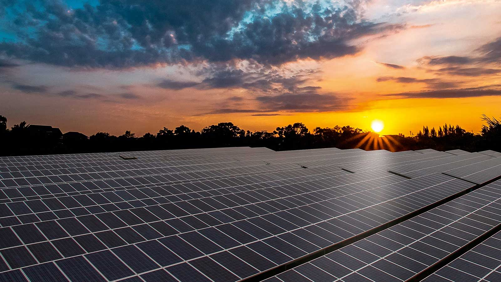

4 Non-Conventional Sources of Energy
Solar Energy
Solar energy is radiant light and heat from the Sun that is harnessed using a range of ever-evolving technologies such as solar heating, photovoltaics, solar thermal energy, solar architecture, molten salt power plants and artificial photosynthesis.- Karnataka
- Total solar energy capacity: 7,100MW.
- Telengana
- Total solar energy capacity: 5,000MW.
- Rajasthan
- Total solar energy capacity: 4,400MW.
- Andhra Pradesh
- Total solar energy capacity: 3,470MW.
- Gujarat
- Total solar energy capacity: 2,654MW.
States in which Solar Energy is used:-
- Lower Electricity Bills.
- You only pay for the deficit power consumed i.e. the difference between power consumed by the household from the grid and the solar power generated from the panels. This drastically reduces your electricity bill.
- Diverse Applications.
- Solar energy can be used for diverse purposes like generating electricity or heat. Some more uses for solar energy are solar ventilation, solar transportation, solar charging etc.
- Technology Development.
- Technology is constantly advancing and improvements will intensify in the future. Innovations in quantum physics and nanotechnology can potentially increase the effectiveness of solar panels and double, or even triple, the electrical output of the solar power systems!
- Low Maintenance
- Net metering system components like solar panels, inverter and mounting structures need low to no maintenance. Since these installations do not require generators or batteries, expense for their maintenance is avoided. This saves not just money but time too!
Advantages of using Solar Energy:-
- Solar Electricity
- This is one of the solar energy applications that has gained a lot of momentum in recent years. As solar panel costs decline and more people become aware of the financial and environmental benefits of solar energy, solar electricity is becoming increasingly accessible.
- Concentrated Solar Power
- Concentrated solar power is even more efficient energy than Solar Panels. A CSP solar farm uses mirrors to reflect and concentrate the sun’s energy towards a tower or other receiver, generating heat that can power a turbine to create electricity.
- Solar Heating
- Typical uses of solar space heating systems include powering radiant floors or pairing with a Forced Hot Air (FHA) system to heat a home. Passive solar home design can also heat homes and businesses in the winter considering the placement of windows and the selection of materials used in the building.
- Solar Transportation
- Solar-powered vehicles may be the future, with existing applications including buses, trains and race cars built by students for events like Solar Car Challenge. There are even Solar Car Races which push the limits of the technology trying to make the cars safer, more compact and more efficient.
Common Uses/Applications of Solar Energy

Wind Energy
Wind energy is a form of solar energy. Wind energy (or wind power) describes the process by which wind is used to generate electricity. Wind turbines convert the kinetic energy in the wind into mechanical power.- Tamil Nadu
- Total wind power capacity: 9,075MW.
- Gujarat
- Total wind power capacity: 7,855MW.
- Maharashtra
- Total wind power capacity: 4781MW.
- Karnataka
- Total wind power capacity: 4779MW.
- Rajasthan
- Total wind power capacity: 4292MW.
States in which Wind Energy is used:-
- Cost Effectiveness.
- With a free energy source, land-based wind turbines produce some of the cheapest electricity on the planet. And, because the power produced by wind farms is sold over a long period at a fixed price, there are none of the sudden hikes in price that often affects electricity produced by fossil fuels.
- Space Efficient.
- Wind turbines are getting both larger and more efficient while maintaining a similar footprint. These bigger turbines do have to be more spread out, but the land between can be used for other things such as food production. Therefore, they may be even more efficient than solar farms.
- Lower Prices.
- As technology improves, so electricity produced by wind production gets cheaper. The last 40 years have seen prices tumble, and while that may not continue at the same rate, the trend is downward for the foreseeable future.
- Low Operational Costs.
- In general, once erected and commissioned, wind turbines require little in the way of maintenance. The technology might be sophisticated, but the mechanics are straightforward and reliable.
Advantages of using Wind Energy:-
- Solar Electricity
- This is one of the solar energy applications that has gained a lot of momentum in recent years. As solar panel costs decline and more people become aware of the financial and environmental benefits of solar energy, solar electricity is becoming increasingly accessible.
- Concentrated Solar Power
- Concentrated solar power is even more efficient energy than Solar Panels. A CSP solar farm uses mirrors to reflect and concentrate the sun’s energy towards a tower or other receiver, generating heat that can power a turbine to create electricity.
- Solar Heating
- Typical uses of solar space heating systems include powering radiant floors or pairing with a Forced Hot Air (FHA) system to heat a home. Passive solar home design can also heat homes and businesses in the winter considering the placement of windows and the selection of materials used in the building.
- Solar Transportation
- Solar-powered vehicles may be the future, with existing applications including buses, trains and race cars built by students for events like Solar Car Challenge. There are even Solar Car Races which push the limits of the technology trying to make the cars safer, more compact and more efficient.
Common Uses/Applications of Solar Energy